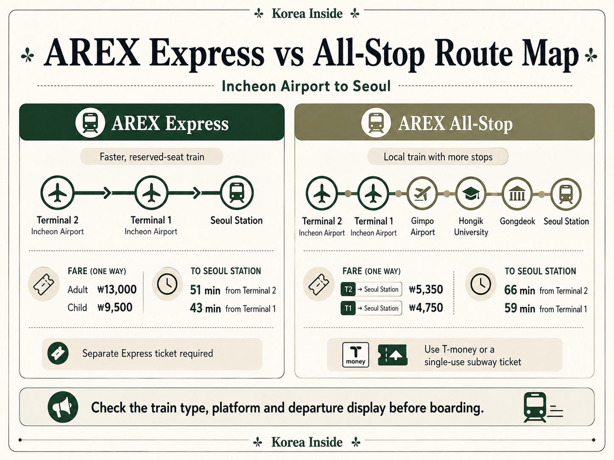
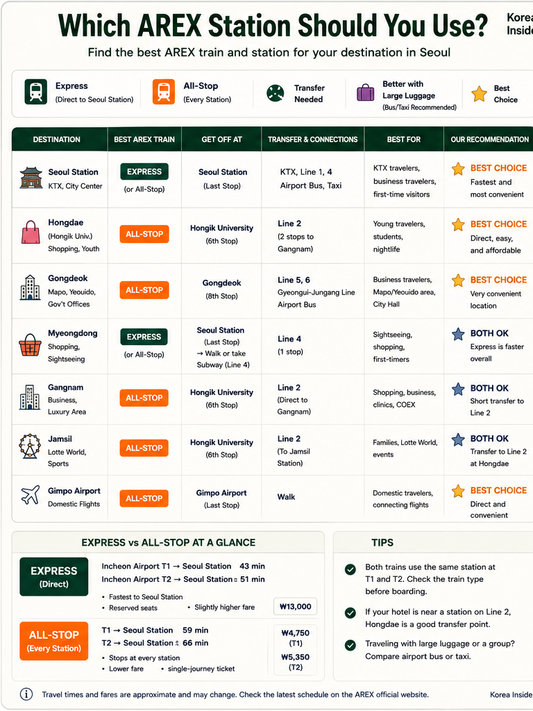
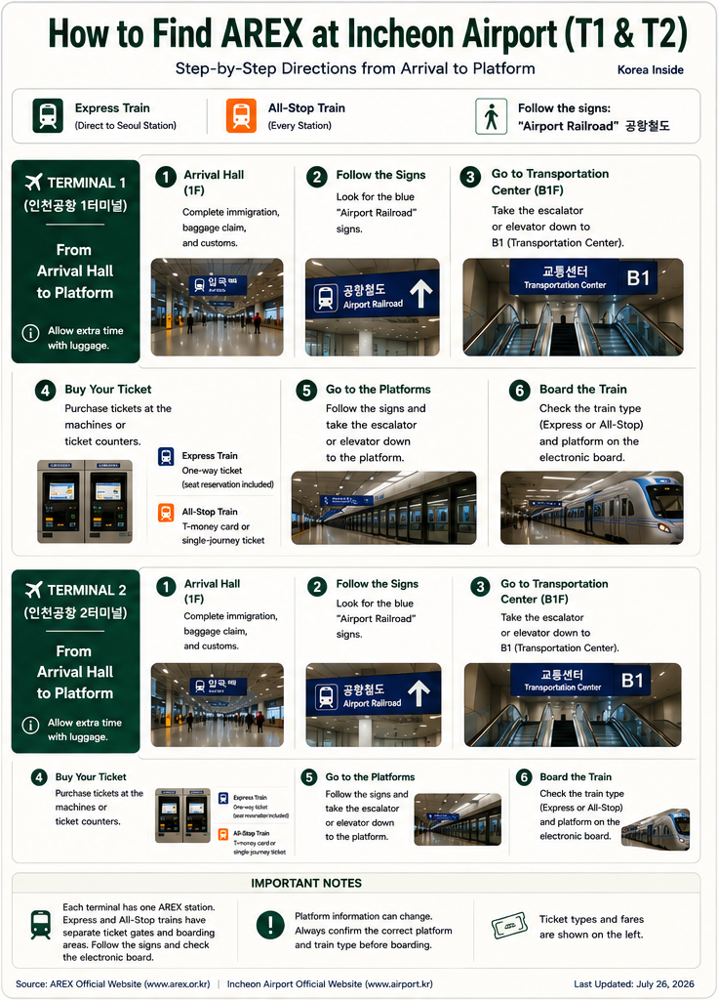
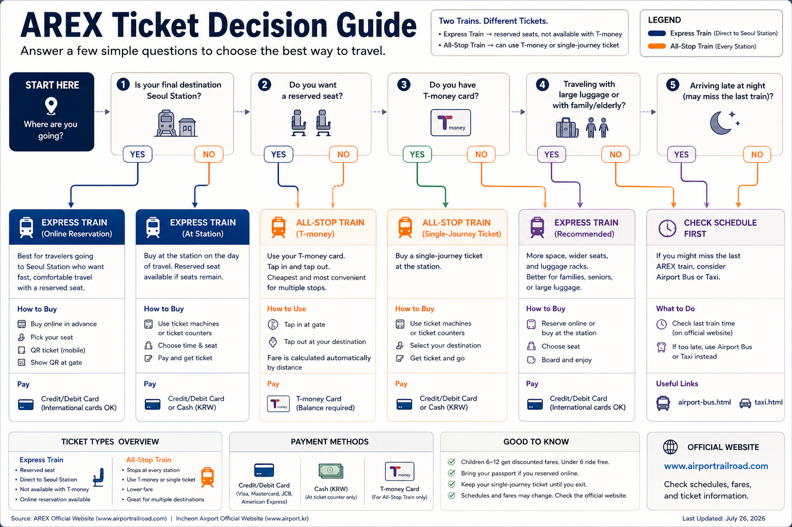
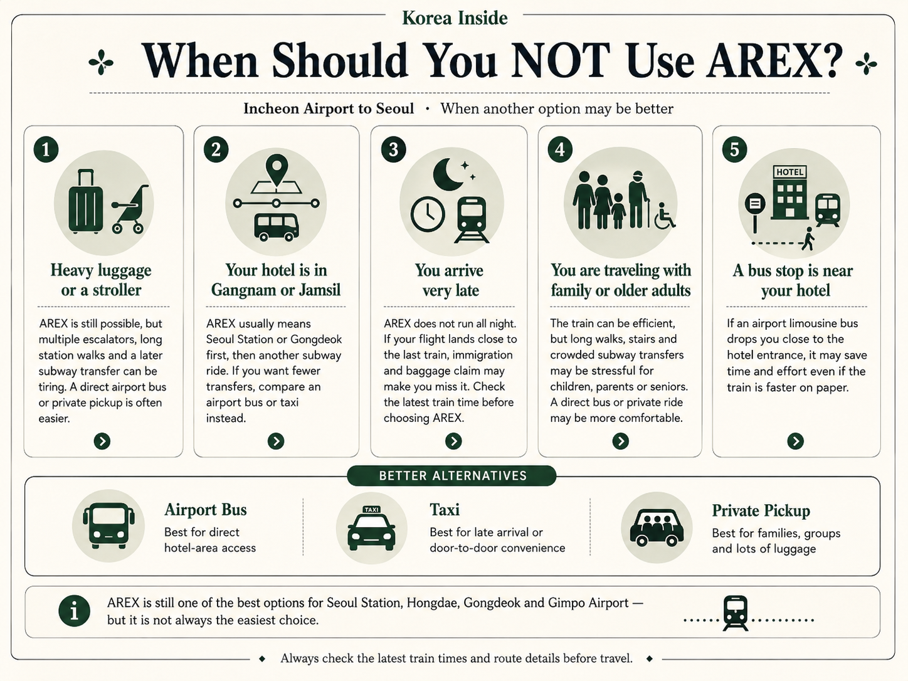

Express ou All-Stop ?
Les deux trains relient l’aéroport d’Incheon à Séoul, mais ne desservent pas les mêmes arrêts et n’utilisent pas les mêmes billets.
Train Express
L’Express part du terminal 2, passe par le terminal 1, puis rejoint la gare de Séoul sans arrêt intermédiaire. Il offre une place attribuée et exige un billet distinct. Il convient à un trajet direct vers la gare de Séoul ou à une correspondance KTX, à condition de prévoir assez de temps.
Train All-Stop
L’All-Stop dessert toutes les stations AREX, dont l’aéroport de Gimpo, Hongik University et Gongdeok. Il fonctionne comme un train de banlieue et accepte T-money. Vous pouvez ainsi descendre plus près de certains hôtels avant la gare de Séoul, sans retraverser inutilement la ville.
« Séoul » n’est pas une destination unique. Le temps gagné entre l’aéroport et la gare de Séoul peut être perdu dans une correspondance, une longue marche en station ou un retour vers l’ouest. Si le trajet en train devient compliqué avec vos bagages, comparez les autres transports depuis l’aéroport d’Incheon; un bus d’aéroport ou un taxi officiel peut limiter les manipulations.
Comparatif rapide : Express et All-Stop
Ce tableau présente les différences utiles devant le distributeur de billets. Les sections par destination expliquent ensuite ce qui vous attend après le train.
| Critère | Train Express | Train All-Stop |
|---|---|---|
| Arrêts | Sans arrêt entre les terminaux de l’aéroport et la gare de Séoul | Toutes les stations, dont l’aéroport de Gimpo, Hongik University et Gongdeok |
| De T1 à la gare de Séoul | 43 minutes | 59 minutes ; certains trains prennent 2–6 minutes de plus |
| De T2 à la gare de Séoul | 51 minutes | 66 minutes ; certains trains prennent 2–6 minutes de plus |
| Tarif adulte | Tarif de vente officiel : 13 000 ₩ | Vers la gare de Séoul avec une carte de transport : T1 4 750 ₩ ; T2 5 350 ₩ |
| Place assise | Place attribuée | Placement libre de type train de banlieue ; place assise non garantie |
| T-money | Non ; billet Express distinct | Oui ; validez une carte de transport suffisamment créditée |
| Type de billet | Billet Express réservé avec code QR ou délivré en gare | T-money, autre carte de transport acceptée ou carte de transport à usage unique |
| Principal compromis | Plus rapide et avec une place assise, mais plus cher et limité à la gare de Séoul | Moins cher, avec davantage d’arrêts utiles, mais plus lent et sans place attribuée |
Combien coûte l’AREX ?
L’Express a un tarif fixe jusqu’à la gare de Séoul. L’All-Stop est facturé selon la distance : le terminal de départ et la station d’arrivée influencent donc tous deux le prix.
Tarif du train Express
Le système officiel de réservation indique 13 000 ₩ pour un adulte non membre, 12 500 ₩ pour un adulte membre et 9 500 ₩ pour un enfant. L’Express utilise un billet réservé distinct, sans tarification à la distance. Le prix de vente est identique de T1 ou T2 à la gare de Séoul.
Tarif de l’All-Stop
Avec une carte de transport prépayée ou postpayée, le trajet adulte depuis T1 coûte 4 750 ₩ jusqu’à la gare de Séoul ou 4 650 ₩ jusqu’à Hongik University. Depuis T2, ces tarifs sont de 5 350 ₩ et 5 250 ₩. Les 600 ₩ supplémentaires correspondent à la distance additionnelle depuis le terminal 2.
T-money ou carte à usage unique
T-money fonctionne dans l’All-Stop en validant à l’entrée et à la sortie ; elle ne remplace pas un billet Express. La carte de transport à usage unique pour adulte coûte le tarif avec carte de transport majoré de 100 ₩, avec une caution remboursable de 500 ₩. Pour récupérer la caution, insérez la carte dans une machine de remboursement à l’arrivée.
Combien de temps gagne-t-on vraiment avec l’Express ?
Le trajet annoncé se termine à la gare de Séoul. Votre déplacement comprend aussi la marche jusqu’à la gare de l’aéroport, l’attente, la correspondance suivante et la marche jusqu’à l’hôtel.
Depuis le terminal 1
L’Express rejoint la gare de Séoul en 43 minutes. L’All-Stop est annoncé à 59 minutes, certains services prenant toutefois 2–6 minutes supplémentaires.
Depuis le terminal 2
L’Express met 51 minutes jusqu’à la gare de Séoul. L’All-Stop met 66 minutes, avec le même supplément possible de 2–6 minutes pour certains trains.
L’Express gagne ainsi environ 15–16 minutes sur le trajet en train lui-même. L’écart peut se réduire s’il impose une correspondance à la gare de Séoul alors que l’All-Stop dessert directement Hongik University ou Gongdeok. Les bagages, les ascenseurs et la marche finale peuvent compter davantage que la différence d’horaire.
Les principales stations et les arrêts AREX
L’Express dessert les deux terminaux de l’aéroport et la gare de Séoul. L’All-Stop ajoute les stations intermédiaires qui déterminent souvent la simplicité de la suite du trajet.

Aéroport d’Incheon, terminal 2
Les deux trains partent d’ici avant de desservir T1. La gare est reliée au centre de transport du terminal 2, mais reste distincte de celle de T1 : le terminal indiqué sur votre réservation de vol compte donc.
Aéroport d’Incheon, terminal 1
Les deux trains s’arrêtent aussi sous le centre de transport du terminal 1. Les cheminements de l’aéroport peuvent changer : les panneaux actuels Airport Railroad / AREX sont plus fiables qu’un numéro de porte enregistré dans un ancien guide.
Aéroport international de Gimpo
Seul l’All-Stop dessert l’aéroport de Gimpo, où vous pouvez prendre les lignes de métro 5 et 9, la Gimpo Goldline et d’autres liaisons ferroviaires. Une correspondance aérienne comprend encore la marche jusqu’au bon terminal : l’heure d’arrivée du train n’est pas l’heure d’embarquement.
Hongik University
L’All-Stop rejoint directement Hongik University, avec correspondances vers la ligne 2 du métro et la Gyeongui-Jungang. Pour un hôtel à Hongdae, prendre l’Express jusqu’à la gare de Séoul puis revenir vers l’ouest est généralement inutile. La station est toutefois vaste, et la bonne sortie peut faire une vraie différence avec des bagages.
Gongdeok
L’All-Stop s’arrête à Gongdeok avant la gare de Séoul. Pour les hôtels proches, aucun deuxième train n’est nécessaire. Les lignes de métro 5 et 6 et la Gyeongui-Jungang permettent de poursuivre. L’emplacement précis de l’hôtel détermine encore la sortie et la correspondance adaptées.
Gare de Séoul
Les deux services se terminent à la gare de Séoul, en correspondance avec les lignes de métro 1 et 4, la Gyeongui-Jungang et les trains nationaux. Les quais AREX se trouvent en profondeur : rejoindre le métro ou un quai KTX implique des couloirs, des ascenseurs ou escalators et de la marche supplémentaire.
Où allez-vous après l’AREX ?
La question utile n’est pas seulement celle du train le plus rapide, mais de la station où vous pouvez descendre et du trajet qu’il reste ensuite.

Gare de Séoul
L’Express arrive plus vite et offre une place attribuée ; l’All-Stop rejoint la même gare à moindre coût. Un hôtel proche peut être accessible à pied, mais un établissement de l’autre côté du complexe peut encore demander une longue sortie. Si la marche finale semble difficile avec les bagages, comparez un arrêt de bus ou une dépose en taxi près de l’adresse.
Hongdae
L’All-Stop dessert directement Hongik University. Il y a donc peu de raisons de prendre l’Express jusqu’à la gare de Séoul puis de revenir vers l’ouest pour un hôtel à Hongdae. La station est toutefois vaste, et la bonne sortie peut faire une vraie différence quand vous tirez vos valises.
Gongdeok
L’All-Stop rejoint Gongdeok sans correspondance. Les hôtels proches sont faciles à rejoindre à pied ; pour d’autres adresses, les lignes 5 ou 6 permettent de continuer. L’emplacement précis de l’hôtel détermine le bon trajet.
Myeongdong
L’Express jusqu’à la gare de Séoul, puis la ligne 4, peut constituer un trajet ferroviaire rapide. L’All-Stop couvre la partie aéroportuaire à moindre coût. Aucun des deux ne supprime la correspondance. Avec plusieurs bagages, un bus d’aéroport s’arrêtant près de l’hôtel peut être plus simple que de traverser la gare de Séoul.
Jongno
Jongno est trop vaste pour une seule réponse concernant l’AREX. Certains hôtels se rejoignent facilement par la ligne 5 depuis Gongdeok ; d’autres sont plus accessibles depuis la gare de Séoul ou en bus d’aéroport. Utilisez l’adresse exacte et la sortie de station, pas seulement le nom du quartier.
Dongdaemun
Un trajet courant consiste à prendre l’Express jusqu’à la gare de Séoul, puis la ligne 4 vers la station la plus proche de l’hôtel. Il reste une correspondance avec les bagages : un arrêt direct de bus d’aéroport près de l’hébergement mérite donc d’être comparé.
Gangnam
Aucune correspondance AREX unique ne convient à tout Gangnam. L’All-Stop permet de rejoindre la ligne 9 à Magongnaru ou à l’aéroport de Gimpo, mais la station utile dépend de l’adresse précise et des éventuelles correspondances suivantes. De nombreux hôtels de Gangnam sont plus simples à rejoindre en bus d’aéroport qu’en portant des bagages sur plusieurs trajets ferroviaires.
Jamsil
Après l’AREX, il reste généralement un trajet important jusqu’à Jamsil, souvent avec plusieurs étapes en train. Un bus d’aéroport adapté peut être plus simple, surtout avec des bagages, des enfants ou une mobilité réduite.
Aéroport de Gimpo
L’All-Stop dessert directement la station Gimpo International Airport ; l’Express passe sans s’arrêter. Prévoyez du temps pour les panneaux, les ascenseurs et la marche jusqu’au bon terminal aérien ou à la ligne de métro suivante.
Correspondance KTX
L’Express est souvent le choix logique si votre trajet suivant part en KTX de la gare de Séoul. Son heure d’arrivée n’est pas celle où vous pourrez monter dans le KTX : il faut encore quitter le quai AREX en profondeur, traverser la gare et rejoindre le bon quai des trains nationaux.
Utilisez les applications de cartographie coréennes pour vérifier l’emplacement de l’hôtel, la sortie de station et la marche finale. Le seul nom du quartier ne suffit pas pour juger la correspondance.
L’accès à l’AREX ne doit pas décider à lui seul de votre hébergement. Hongdae et Gongdeok sont desservis directement par l’All-Stop ; la gare de Séoul ajoute l’Express et les trains nationaux. Certains hôtels de Myeongdong peuvent être plus faciles à rejoindre en bus d’aéroport.
Trouver l’AREX aux terminaux 1 et 2
T1 et T2 ont des gares séparées, mais le parcours depuis le hall des arrivées suit les mêmes grandes étapes.
- Passez l’immigration, récupérez vos bagages, passez la douane, puis entrez dans le hall public des arrivées.
- Suivez les panneaux Airport Railroad / AREX vers le centre de transport du terminal.
- Poursuivez jusqu’à la zone ferroviaire et distinguez l’entrée de l’Express de celle de l’All-Stop.
- Achetez le bon billet ou préparez une carte de transport suffisamment créditée pour l’All-Stop.
- Consultez les départs en direct et confirmez le quai en direction de Séoul avant d’entrer.
Au terminal 1 : la zone ferroviaire se trouve dans le centre de transport de T1. Suivez les panneaux de ce bâtiment, plutôt que des indications rédigées pour T2.
Au terminal 2 : dirigez-vous vers le centre de transport de T2 et sa propre gare. Inutile de rejoindre d’abord T1.

Les cheminements et passages temporaires de l’aéroport peuvent changer : les panneaux actuels sont plus fiables qu’un ancien numéro de porte ou de sortie. Le guide du parcours d’arrivée à l’aéroport d’Incheon explique les étapes qui précèdent votre arrivée dans le hall public.
Billets Express et All-Stop
Les deux trains utilisent des portillons et des systèmes de billets différents. T-money fonctionne dans l’All-Stop, mais ne remplace pas une réservation Express.

Billets Express
Le site et l’application officiels permettent de rechercher un trajet du jour même jusqu’à deux mois à l’avance. Une fois le train choisi placé dans le panier, le paiement doit être effectué sous 20 minutes. Ce délai ne signifie pas que les réservations restent possibles jusqu’à 20 minutes avant le départ. Le billet payé porte un code QR et indique le train, la voiture et la place attribuée.
Les billets sont aussi vendus aux machines Express et aux centres d’information de T1, T2 et de la gare de Séoul. AREX cite Visa, Mastercard, JCB, Diners Club, American Express et UnionPay parmi les réseaux de cartes étrangères acceptés pour acheter un billet Express.
Billets All-Stop
Une carte prépayée comme T-money peut être utilisée dès que son solde suffit pour le trajet. Validez à l’entrée de l’All-Stop et à la sortie à destination.
Sans carte de transport, vous pouvez acheter une carte à usage unique à une machine en gare, la conserver pendant le trajet et récupérer la caution après la sortie. Les indications officielles All-Stop confirment la vente aux machines, mais pas clairement l’acceptation des cartes étrangères. Ne comptez donc pas sur un moyen de paiement précis sans vérifier sur place.
Le site officiel de réservation Express permet aussi les modifications et remboursements, et affiche les conditions applicables avant confirmation. Les règles d’un revendeur peuvent différer de celles de l’opérateur.
La gare de Séoul n’est souvent que le milieu du trajet
Arriver à la gare de Séoul ne signifie pas arriver à votre hôtel.
Les quais AREX se trouvent en profondeur dans un vaste complexe. Rejoindre le métro, un quai KTX ou la rue peut nécessiter de longs couloirs, un ascenseur ou un escalator et du temps pour suivre les panneaux avec les bagages.
Correspondances vers le métro et les hôtels
La ligne 4 est la suite habituelle vers Myeongdong et une partie de Dongdaemun ; la ligne 1 dessert d’autres secteurs du centre et de l’est. Le trajet n’est pas terminé aux portillons du métro : la bonne direction, la sortie côté hôtel et la marche finale influencent toutes sa facilité.
KTX et trains nationaux
L’heure annoncée d’arrivée de l’AREX ne vous laisse pas immédiatement prêt à monter dans un KTX. Comptez la marche depuis le quai AREX, les ascenseurs ou escalators, les éventuels contrôles de billets et la traversée de la gare jusqu’au bon quai national.
Utilisez les applications de cartographie coréennes pour vérifier l’emplacement de l’hôtel, la sortie de station et la marche finale. Le seul nom du quartier ne suffit pas pour juger la correspondance.
City Airport Terminal
Le City Airport Terminal de la gare de Séoul est un service pour les départs, pas une assistance aux voyageurs arrivant d’Incheon. Les passagers internationaux admissibles, voyageant le jour même et utilisant l’Express, peuvent éventuellement y effectuer leurs formalités de départ, selon les compagnies et conditions en vigueur.
Bagages, familles et accessibilité
Un trajet confortable en train ne supprime pas les efforts nécessaires pour déplacer les bagages dans la gare de l’aéroport, lors d’une correspondance et jusqu’à l’hôtel.
Dans le train
L’Express offre une place attribuée et un espace dédié aux bagages, ce qui rend le trajet principal plus prévisible. L’All-Stop propose un placement de type train de banlieue : la place assise n’est pas garantie, et les périodes chargées peuvent être difficiles avec de grandes valises, une poussette ou des enfants.
Entre le train et l’hôtel
Chaque bagage doit encore passer du hall à la gare de l’aéroport, monter dans l’AREX, traverser les éventuelles correspondances à Séoul et suivre la marche finale. Pour une personne en fauteuil roulant, à mobilité réduite ou une famille avec plusieurs bagages, l’accès aux ascenseurs et la distance de correspondance peuvent compter davantage que 15 minutes gagnées en train.
Si ce parcours impose de porter les bagages plusieurs fois ou de traverser de longs couloirs, un bus d’aéroport s’arrêtant près de l’hôtel ou un taxi officiel de taille adaptée peut réduire l’effort total.

Arrivée tardive ? Partez de l’horaire du train, pas de l’atterrissage
L’AREX ne circule pas 24 h sur 24, et l’heure d’atterrissage n’est pas celle de votre arrivée sur le quai.
Les horaires officiels actuels de l’Express indiquent les premiers départs de l’aéroport à 05:16 depuis T2 et 05:24 depuis T1, et les derniers à 22:40 depuis T2 et 22:48 depuis T1. L’All-Stop suit d’autres horaires : consultez les horaires officiels AREX pour votre date plutôt qu’une ancienne capture d’écran.
- Commencez par le dernier départ du terminal où atterrit votre vol.
- Remontez le temps nécessaire pour marcher jusqu’au quai et acheter le billet.
- Ajoutez ensuite l’immigration, les bagages et la douane.
- Comparez le résultat à l’heure d’atterrissage prévue, avec une marge de retard réaliste.
- Prévoyez une solution de secours encore disponible à l’heure où vous pouvez réellement atteindre le quai.
Si le dernier train ne convient plus, cherchez un bus de nuit officiel ou une autre solution de bus d’aéroport. S’il ne reste aucun service adapté, utilisez une station officielle de taxis de l’aéroport ou une prise en charge vérifiée, avec des conditions claires de rendez-vous et de retard.
Les erreurs fréquentes avec l’AREX
Le train lui-même est simple. Les difficultés commencent généralement lorsque le trajet n’est prévu que jusqu’à une station AREX.
- L’Express ne s’arrête pas à Hongik University. Pour la plupart des hôtels de Hongdae, l’All-Stop évite d’aller à la gare de Séoul puis de revenir vers l’ouest.
- La gare de Séoul n’est la fin du trajet que si votre hôtel est proche. Les couloirs du métro, les sorties et la marche finale demandent leur propre temps.
- L’Express et l’All-Stop ont des billets et portillons distincts. Entrer dans la mauvaise zone oblige à revenir inutilement dans le hall.
- T-money fonctionne dans l’All-Stop, mais ne vaut pas billet Express. L’Express exige sa propre réservation ou un billet délivré en gare.
- T1 et T2 sont des gares différentes. Les indications et horaires doivent correspondre au terminal d’arrivée du vol.
- Les anciens tableaux de prix, captures d’horaires et conditions de revendeurs peuvent être dépassés. Les pages actuelles de l’opérateur doivent servir de référence finale.
- Un programme nocturne fondé sur l’heure d’atterrissage oublie l’immigration, les bagages, la douane, la marche jusqu’à la gare et l’achat du billet.
- Le train n’est pas automatiquement plus simple avec plusieurs grosses valises. Un arrêt de bus près de l’hôtel ou un taxi officiel peut éviter de porter les bagages et de multiplier les correspondances.
- Gangnam et Jongno sont trop vastes pour une station de correspondance par défaut. L’adresse de l’hôtel, la ligne suivante et la marche finale peuvent changer le trajet le plus logique.
Questions fréquentes sur l’AREX
Voici les détails pratiques qui comptent souvent une fois le vol, l’hôtel et l’heure d’arrivée fixés.
Combien coûte l’AREX entre Incheon et Séoul ?
Le tarif de vente adulte de l’Express est de 13 000 ₩. Avec une carte de transport, l’All-Stop jusqu’à la gare de Séoul coûte 4 750 ₩ depuis T1 ou 5 350 ₩ depuis T2. Vérifiez le tarif officiel actuel avant le trajet.
Combien de temps met l’AREX jusqu’à la gare de Séoul ?
L’Express met 43 minutes depuis T1 ou 51 minutes depuis T2. L’All-Stop met 59 minutes depuis T1 ou 66 minutes depuis T2, certains trains prenant 2–6 minutes de plus.
L’AREX Express est-il plus rapide que l’All-Stop ?
Il est plus rapide jusqu’à la gare de Séoul. Mais un hôtel près de Hongik University, Gongdeok ou d’une autre station intermédiaire peut rester plus rapide à rejoindre avec l’All-Stop, car vous n’avez pas à revenir sur vos pas.
Peut-on utiliser T-money dans l’AREX ?
Utilisez T-money dans l’All-Stop. L’Express exige un billet réservé distinct.
Quel AREX prendre pour Hongdae ?
L’All-Stop dessert directement la station Hongik University. L’Express passe Hongdae et se termine à la gare de Séoul : il ajoute donc généralement un retour inutile vers l’ouest.
L’AREX circule-t-il 24 h sur 24 ?
Non. Consultez les horaires officiels pour votre terminal et votre date, surtout après un vol tardif.
Où trouver l’AREX au terminal 1 ?
Après la douane, suivez les panneaux Airport Railroad / AREX depuis le hall public des arrivées vers le Transportation Center du terminal 1 et la zone ferroviaire.
Où trouver l’AREX au terminal 2 ?
Après la douane, suivez les panneaux Airport Railroad / AREX depuis le hall public des arrivées vers le Transportation Center du terminal 2 et la zone ferroviaire.
L’AREX convient-il aux grosses valises ?
L’Express offre une place attribuée et un espace réservé aux bagages, mais chaque valise doit encore traverser la gare de l’aéroport et les éventuelles correspondances à Séoul. Avec plusieurs grosses valises, un bus ou un taxi peut limiter les manipulations.
L’AREX est-il préférable au bus d’aéroport ?
L’AREX convient mieux pour une durée ferroviaire prévisible et un hôtel facile à rejoindre depuis une station. Le bus peut être meilleur si un arrêt officiel est proche de l’hôtel et réduit les déplacements de bagages entre correspondances.
Peut-on acheter un billet AREX avec une carte de crédit étrangère ?
Pour l’Express, AREX cite Visa, Mastercard, JCB, Diners Club, American Express et UnionPay parmi les réseaux de cartes étrangères acceptés. Pour l’All-Stop, le guide officiel confirme la vente de cartes à usage unique aux machines en gare, mais pas clairement l’acceptation des cartes étrangères à ces machines.
Que faire si je rate le dernier train ?
Vérifiez d’abord les bus de nuit et bus d’aéroport officiels. Si aucun ne convient à votre destination et à l’horaire, utilisez une station officielle de taxis de l’aéroport ou une prise en charge vérifiée.
Sources officielles et guides associés
Tarifs, horaires, moyens de paiement et conditions de service peuvent changer. Ces pages officielles servent à la dernière vérification avant le trajet.
- Présentation de l’AREX Express — arrêts, durée, tarif de vente officiel, places attribuées et emplacement des gares.
- Horaires de l’AREX Express — premiers et derniers départs, et horaires par date.
- Guide des billets AREX Express — achat en ligne et en gare, cartes étrangères, billets QR, modifications et remboursements.
- Présentation de l’AREX All-Stop — stations, correspondances, durée et types de billets.
- Tableau des tarifs AREX All-Stop — prix selon la distance, supplément à usage unique et caution remboursable.
- Guide ferroviaire de l’aéroport d’Incheon — contexte des transports d’aéroport et indications par terminal.
- Guide du terminal en ville de l’aéroport d’Incheon — admissibilité Express et conditions du service de départ.
- Guide des transports d’aéroport de VISITKOREA — présentation officielle indépendante des types de trains AREX et de leurs durées.